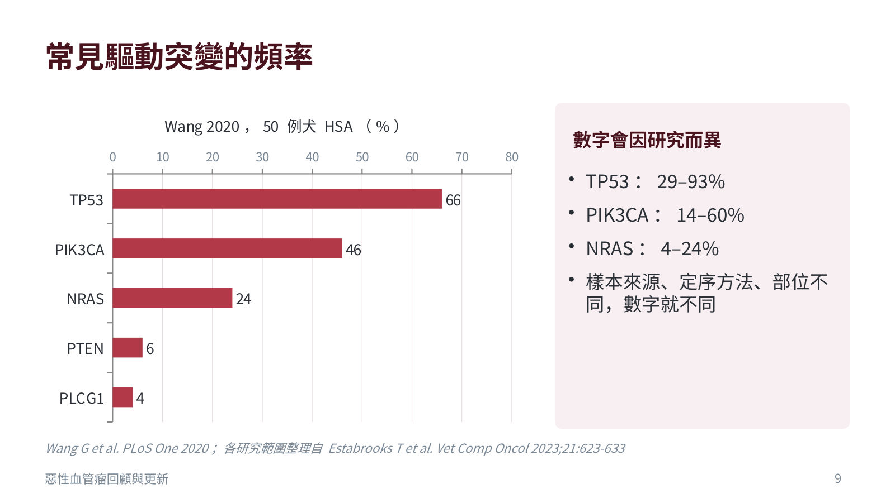
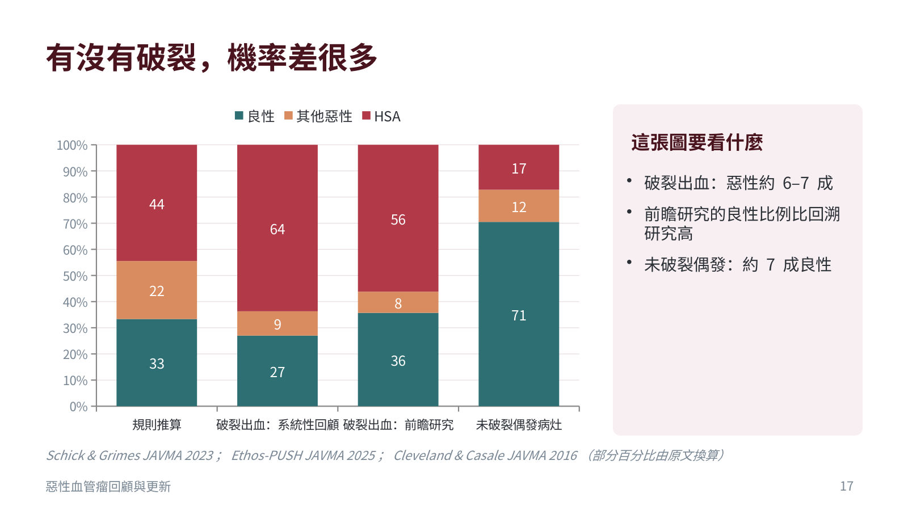
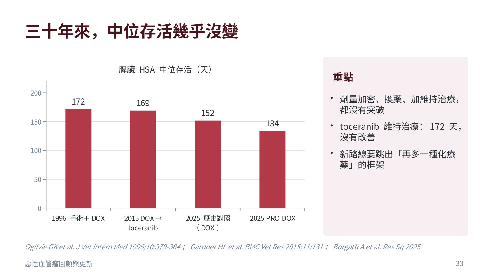

惡性血管瘤回顧與更新：犬貓血管肉瘤的診斷與治療
主講：Rita Ho, DVM（practice limited to oncology）
Hemangiosarcoma review and update｜台灣家庭獸醫繼續教育課程（投影片 62 張＋2 頁講義）｜場次 01
資料來源標記：
講者投影片（數字＝投影片編號） 💡 補充 整理者補充（換算、交叉參照；不是講者說的）
依講者的投影片與講義整理，沒有課堂錄音；投影片本身是中文，這裡以重點整理為主，數字與劑量照投影片。
依講者的投影片與講義整理，沒有課堂錄音；投影片本身是中文，這裡以重點整理為主，數字與劑量照投影片。
⭐ 必記原則
- HSA 的源頭是具內皮分化潛能的造血前驅細胞；逾 9 成有驅動突變（TP53、PIK3CA、NRAS），但不需要先做基因檢測才能治療
- 約半數 HSA 犬有凝血異常，DIC 是重要死因；術前一定要 PT／aPTT、備血
- double two-thirds rule 不能照抄：破裂出血約 6–7 成惡性，未破裂偶發病灶約 7 成良性；小型犬良性比例更高
- HeLP score 外部驗證 AUC 0.79：可輔助溝通，不能決定開不開刀；脾臟 FNA 與病理一致性差，整顆脾臟送病理、多處取樣
- 脾臟 HSA 約 8.7% 同時有右心房腫塊；術前心臟超音波、術中術後監測心律不整
- 只開刀中位存活約 1.6 個月；加 doxorubicin 約 4–6 個月；一年存活約 10%，三十年沒進步
- eBAT 第二個試驗沒有重現效果；PRO-DOX 活超過兩年的 3 隻都是 5 歲年輕犬，看新療法先問對照組
- 真皮型（日曬相關）預後好（中位存活 780–1,549 天）；皮下／肌肉型要當內臟型處理；貓不能套用犬的規則
為什麼值得單獨開一堂課
▾三個數字
| 數字 | 意義 |
|---|---|
| 4 天 | 英國一般動物醫院：脾臟 HSA 從診斷起算的中位存活（含當天安樂死） |
| 105 天 | 同一研究中，有病理確診的病例中位存活明顯較長 |
| 約 10% | 手術加 doxorubicin 的犬存活超過一年的比例 |
很多狗在一般動物醫院確診當天就被安樂死；飼主聽到的數字往往決定了後面的一切。這堂課的目標：讓給飼主的數字更準確、更貼近眼前這隻病患（Taylor 2025, VetCompass 788 隻）。
1. 起源、好發族群與分子研究
▾HSA 從哪裡來
傳統看法是血管內皮細胞惡性轉化，能解釋充滿血竇、容易破裂，但解釋不了腫瘤細胞常帶造血與骨髓系標記。目前的觀念：源頭是具內皮分化潛能的造血前驅細胞，腫瘤細胞表現 CD34、CD133、CD117；同一種前驅細胞往不同方向分化，造成腫瘤異質性。
好發部位、族群與三種臨床行為
| 型態 | 特徵 |
|---|---|
| 真皮型 | 局限於真皮，常與日曬相關；手術切除後多數可長期控制，預後明顯較好 |
| 皮下／肌肉型 | 侵犯皮下或肌肉層；局部復發與轉移風險高，行為接近內臟型 |
| 內臟型 | 脾臟最常見（常破裂出血才發現），其次右心房／右心耳、肝臟；診斷時多已有微小轉移 |
- 年齡多為 8–13 歲
- 內臟型：德國牧羊犬、黃金獵犬、拉布拉多等大型犬
- 真皮型：淺色、短毛、腹部毛稀疏的犬
- 轉移：肝、網膜、肺；HSA 也是犬最常見的轉移性腦瘤
分子研究：HSA 不是單一疾病
- 三種轉錄型態：angiogenic（血管新生）、inflammatory（發炎與骨髓系）、adipogenic（脂質代謝）
- 50 例 NGS：逾 90% 有潛在驅動突變；TP53 66%、PIK3CA 46%、NRAS 24%、PTEN 6%、PLCG1 4%；路徑以 PI3K/AKT/mTOR 與 RAS/MAPK 為主
- 各研究數字差很多（TP53 29–93%、PIK3CA 14–60%、NRAS 4–24%）
- 可以解釋：為什麼 doxorubicin 反應差異大、小型試驗換一批病例結果就不同；真皮型有紫外線突變特徵
- 目前做不到：三型分類只在研究層次；依突變選藥仍在試驗中（Ethos-PUSH）；一般病例不需要先送基因檢測

2. 臨床表現與分期
▾常見的就診原因
| 情境 | 表現 |
|---|---|
| 急性出血 | 突然虛弱、倒下；黏膜蒼白、心跳快；腹部膨大、液體波動 |
| 反覆出血 | 時好時壞的虛弱；小量出血後自行吸收；飼主常以為是老了或中暑 |
| 意外發現 | 健檢或術前超音波看到脾臟結節；皮膚紫紅色小腫塊；沒有症狀 |
血液學與凝血：要主動找的線索
- 貧血（常為再生性）、血小板低下
- 裂紅血球（schistocyte）、棘狀紅血球（acanthocyte）、有核紅血球增加
- 約半數 HSA 犬有凝血異常；DIC 是重要死因之一
- 術前強烈建議測 PT／aPTT，備血或備血漿
犬內臟型 HSA 的臨床分期
| 分期 | 定義 | 臨床意義 |
|---|---|---|
| Stage I | 局限於原發器官，未破裂，無淋巴結或遠端轉移 | 預後相對最好，但仍多數會轉移 |
| Stage II | 腫瘤破裂，或有局部淋巴結轉移 | 急診腹腔出血的犬多屬此期 |
| Stage III | 遠端轉移（肝、肺、肉眼可見的腹腔擴散等） | 存活最短；以緩和為主 |
Wendelburg 2015（208 隻）：臨床分期是唯一與存活顯著相關的預後因子。
3. 脾臟腫塊：惡性的機率到底多高
▾double two-thirds rule 是怎麼來的
規則：脾臟腫塊約 2/3 惡性，惡性中約 2/3 是 HSA，換算約 45% 是 HSA。問題：來自 1980 年代教學醫院病理資料，沒有區分有沒有破裂、有沒有症狀，套用在不同病患群數字就會偏（Spangler 1992）。
有沒有破裂，機率差很多
| 病患族群 | 良性 | HSA | 出處 |
|---|---|---|---|
| 規則推算 | 33% | 44% | Spangler 1992 |
| 破裂出血（系統性回顧，14 篇 1,150 隻） | 27% | 64%（惡性中 87.3% 是 HSA） | Schick 2023 |
| 破裂出血（前瞻，345 隻、30 家醫院） | 35.7% | 56.2% | Ethos-PUSH 2025 |
| 未破裂偶發病灶（105 隻） | 70.5% | 約 17% | Cleveland 2016 |

- Ethos-PUSH：19.6% 的 HSA 脾臟同時有良性病變；限制是已排除肺轉移、只收願意手術的飼主
- Ziogaite 2024：因偶發病灶切脾的犬 93.9% 良性；GDV 手術時發現單一脾臟腫塊，10.9% 最後為惡性
- 偶發病灶的惡性病例中仍約 6 成是 HSA；良性腫塊通常比惡性大，單看大小不能排除惡性
品種與體型：Davies 2020 的修正
288 隻脾臟腫塊犬依基因組成分群：整體惡性與良性約 50 : 50；腹腔出血時惡性機率明顯上升。小型犬良性比例較高，小型犬的惡性腫塊是 HSA 的機會只有大型犬的約 1/3。台灣門診瑪爾濟斯、貴賓、西施很多，不能用大型犬的數字嚇飼主。
HeLP score 與 T-STAT
| HeLP score | T-STAT（Tufts） | |
|---|---|---|
| 適用病患 | 非外傷性腹腔出血（任何器官） | 脾臟腫塊（有無出血皆可） |
| 預測目標 | 是不是 HSA | 是不是惡性 |
| 用到的資料 | 體重、血漿總蛋白、血小板、胸腔 X 光是否疑似轉移 | 總蛋白、有核紅血球、6 項超音波所見 |
| 原始研究 AUC | 建立 0.85／驗證 0.77 | 建立 0.80／驗證 0.78 |
| 2024 外部驗證 AUC | 0.79（連續分數；分級 0.73） | 0.68 |
| 怎麼用 | 輔助跟飼主溝通機率 | 準確度較差，參考價值有限 |
- HeLP（Schick 2019）：406 隻非外傷性腹腔出血犬；總分 0–100，低 0–40／中 41–55／高 > 55；原始研究各組 HSA 比例 36%／76%／96%
- Hillier 2024 外部驗證：HSA 犬在低、中、高三組各約占 1/3；良性犬 76% 被歸為低風險
- AUC 白話：隨機抽一隻 HSA、一隻非 HSA，評分把 HSA 排前面的機率；0.5＝丟銅板、0.7–0.8 可接受、0.8–0.9 不錯
- 惡性比例是「那一群病例」的特性，會隨盛行率改變（就像陽性預測值）
影像與細胞學能幫多少
| 工具 | 重點 |
|---|---|
| 超音波／CT | 評估大小、出血、肝臟結節、腹腔擴散；光看外觀分不出良惡性 |
| 脾臟 FNA | 細胞學與病理常不一致；血液稀釋、出血風險；不建議作為開不開刀的依據 |
| 病理 | 整顆脾臟送檢，請病理科多處取樣；HSA 可能藏在血腫旁邊 |
4. 術前檢查與飼主溝通
▾術前強烈建議的項目
- CBC、血液抹片、生化；PT／aPTT（可加 fibrinogen、D-dimer）；血型與交叉配血
- 胸腔 X 光三張（左側位、右側位，再加腹背位或背腹位）
- 心臟超音波：脾臟 HSA 約 8.7% 同時有右心房腫塊；右心房 HSA 約 29% 同時有脾臟病灶
- 心電圖：腹腔出血犬術中、術後心室性心律不整較多（講義：術中與術後 24–48 小時監測）
這些數字要怎麼跟飼主說
| 情境 | 建議說法 |
|---|---|
| 破裂出血 | 「大約三分之二是惡性，但也有約三分之一是良性，開完刀就可以好。」 |
| 偶發結節 | 「多數是良性。要不要先切，看大小、變化，還有您能接受多少風險。」 |
| 確診 HSA | 「只開刀，中位存活約 1–2 個月；加上化療，大約 4–6 個月。」 |
| 評分工具 | 「這是機率，不是答案；答案要等整顆脾臟的病理報告。」 |
5. 心臟與其他部位
▾心臟 HSA
- 好發右心房／右心耳：心包膜積液、心臟填塞、右心衰竭
- 心包膜穿刺可救急，但多會再積液；心臟超音波看不到腫塊不代表沒有
- Mullin 2016（64 隻推定心臟 HSA）單用 doxorubicin：客觀反應率 41%、臨床效益 68%；中位存活治療組 116 天 vs 未治療 12 天
- 可切除時，右心耳切除加化療可再延長
💡 補充 心包膜積液的超音波評估見 心臟超音波 14。
其他部位
| 部位 | 重點 |
|---|---|
| 肝臟與腹膜後 | 可能原發也可能轉移；腹膜後 HSA 常因出血才發現 |
| 肌肉與骨骼 | 肌肉腫塊伴隨瘀青；骨骼 HSA 是骨腫瘤的鑑別診斷之一 |
| 中樞神經 | 犬最常見的轉移性腦瘤；老犬突發神經症狀＋不明出血要想到 |
6. 治療：標準做法與三條新路線
▾標準做法：脾臟切除加 doxorubicin
- 只做脾臟切除：中位存活 1.6 個月（208 隻）；加 doxorubicin 為主的化療：4–6 個月；存活超過一年約 10%
- Wendelburg 2015：化療延長早期存活，但整段追蹤期與只開刀組沒有顯著差異
- Doxorubicin 加 cyclophosphamide 節拍式化療看起來較好，但延長幅度有限
- 三十年來中位存活：1996 手術＋DOX 172 天、2015 DOX → toceranib 169 天、2025 歷史對照 152 天、2025 PRO-DOX 134 天

Doxorubicin 實務重點
| 項目 | 內容 |
|---|---|
| 劑量 | 犬 > 15 kg：30 mg/m² IV，每 2–3 週；犬 < 15 kg：1 mg/kg IV；常用 5 次（累積 150 mg/m²） |
| 給藥前 | 確認靜脈通暢；抗組織胺可減少過敏反應，但不能預防急性心律不整 |
| 心臟毒性 | 累積劑量相關；治療前強烈建議心臟超音波 |
| 骨髓抑制 | 嗜中性球最低點約第 7–10 天 |
| 血管外滲漏 | 組織壞死嚴重，需立即處理 |
| 貓 | 注意腎毒性 |
其他常被問到的選項：證據有限
| 選項 | 目前證據 | 建議怎麼說 |
|---|---|---|
| Toceranib 維持治療 | Gardner 2015：未改善存活 | 不建議常規使用 |
| 節拍式化療 | 小型、回溯研究，結果不一 | 無法打 DOX 時的選擇 |
| 雲南白藥 | 缺乏臨床試驗證據 | 不能取代手術止血 |
| I’m-Yunity（雲芝多醣肽） | Gedney 2022：加入 DOX 無額外效益 | 飼主想用可討論，但別期待效果 |
新路線一：eBAT（雙特異性血管毒素）
- EGF 與 uPA 片段接上去免疫化的假單胞菌外毒素，同時打腫瘤細胞與腫瘤血管
- SRCBST-1（2017）：23 隻 stage I–II，脾切後先給 eBAT 再接 DOX；6 個月存活對照 < 40% → 有效劑量組約 70%；6 隻活超過 450 天
- SRCBST-2（2020）：eBAT 增加到三個療程、縮短與 DOX 間隔、放寬收可切除 stage III；25 隻 vs 對照 35 隻：中位存活 4.9 vs 4.8 個月、6 個月存活 41.7% vs 30.6%，都不顯著；6 隻急性低血壓
- 仍在美國研究中，台灣拿不到
新路線二：PRO-DOX（propranolol＋doxorubicin）
- 理由：人的 angiosarcoma 有合併成功案例；HSA 細胞表現 β 腎上腺素受體；體外可增加 DOX 作用
- 第一期試驗（2025 預印本，尚未同儕審查）：20 隻 stage I–II，propranolol 0.8–1.3 mg/kg PO TID
- 中位存活 134 天 vs 歷史對照 152 天（P = 0.59）；15% 活超過兩年（3 隻，全是 5 歲）
- 缺乏年齡配對對照：年輕犬不論有沒有吃 propranolol 存活都較長，不能把兩年存活歸功於 propranolol
- 門診：年輕犬 HSA 積極治療可能更值得；propranolol 便宜安全，但目前沒有證據支持例行加入
新路線三：基因導向、疫苗與早期偵測
- 依突變選藥：Ethos-PUSH；FidoCure 109 隻 TP53、NRAS、PIK3CA 最常見
- eVim 疫苗（細胞外 vimentin）加 DOX 共 23 隻：一年存活 44% vs 歷史對照 14%；中位存活 235 vs 136 天，差異不顯著
- 血液中 HSA 相關細胞的早期偵測研究中：目標是在破裂前找到高風險犬
為什麼「歷史對照組」要打問號：年代不同（分期、手術、支持療法都進步）、病患不同（體重 ≥ 20 kg、分期、年齡）、時間不同（PRO-DOX 開刀到化療平均 28.7 天 vs 對照 21.8 天）。要回答有沒有效，需要隨機分組、條件相同的對照組。
不手術或已轉移：緩和治療
- 輸血、輸液、止痛；心包膜穿刺改善填塞；限制劇烈活動，教飼主認識出血警訊
- 說明可能突然再出血；事先討論急救或安樂死；生活品質優先，定期一起評估
7. 皮膚與皮下的 HSA
▾同樣叫 HSA，預後差很多
| 真皮型 | 皮下／肌肉型 | |
|---|---|---|
| 位置 | 局限於真皮 | 侵犯皮下或肌肉層 |
| 病因線索 | 日曬、淺色短毛、腹部／腹股溝毛少處；常多發，旁邊有日曬性皮膚炎 | 不明 |
| 轉移風險 | 低 | 高，接近內臟型 |
| 主要治療 | 手術切除、減少日曬 | 完整分期（胸腔 X 光、腹部與心臟超音波），盡量完全切除，不完全切除考慮放療，強烈建議輔助化療 |
| 代表數據 | Ward 1994（25 隻）中位存活 780 天；Szivek 2012（94 隻）日曬相關 1,549 天 vs 非日曬 545 天 | Shiu 2011（71 隻）：惡化時間 116 天、整體存活 172 天、一年存活 25%；29% 侵犯肌肉層 |
💡 補充 講義提醒：切片要夠深才能判斷是真皮還是皮下；報告看不出深度時直接問病理科。
8. 貓的 HSA
▾少見，而且要分開看
| 部位 | 預後（Johannes 2007，53 隻） |
|---|---|
| 皮膚型 | 沒有貓死於腫瘤，算不出中位存活 |
| 皮下型 | 中位存活 384 天 |
| 內臟型 | 多數在診斷當下就死亡或安樂死（中位存活 0 天） |
- 完全切除、分裂指數 ≤ 3 的貓活得比較久；皮膚與皮下型比過去以為的更容易轉移
- 內臟型：脾臟、肝臟、腸道、腸繫膜；常見腹腔出血、貧血、虛弱，診斷時常已擴散
- 貓的脾臟腫大更常見肥大細胞瘤與淋巴癌，double two-thirds rule 不適用
- Doxorubicin 用於貓要注意腎毒性，資料很少
9. 台灣門診實務與三個病例
▾在台灣，哪些做得到
| 項目 | 台灣現況 | 備註 |
|---|---|---|
| Doxorubicin（小紅莓） | 人用藥品 | 需化療防護與給藥設備 |
| Cyclophosphamide | 人用口服錠 | 節拍式化療；注意出血性膀胱炎 |
| Propranolol | 人用藥品，價格低 | PRO-DOX 未證實有加成效果 |
| eBAT、eVim 疫苗 | 拿不到 | 僅限美國臨床試驗 |
| 腫瘤基因檢測 | 多需送國外商業實驗室 | 目前不影響標準治療選擇 |
人用藥品用於動物仍受現行法規限制，使用前請確認取得管道與病歷記錄。
家醫最能發揮作用的四個時機
| 時機 | 做什麼 |
|---|---|
| 發現偶發脾臟結節 | 解釋多數為良性，討論切除或追蹤，約定回診 |
| 急診腹腔出血 | 穩定生命徵象、驗血與凝血，用正確的數字跟飼主談 |
| 術前分期 | 胸腔 X 光三張、腹部超音波，並安排心臟超音波 |
| 皮膚紫紅色腫塊 | 早切、切夠深，教飼主減少日曬 |
三個病例
| 病例 | 討論方向 |
|---|---|
| 突然倒下的 11 歲米克斯（公、已結紮、28 kg）：PCV 22%、血小板 8.5 萬、腹腔大量液體、脾臟 6 cm 混合回音腫塊、胸腔 X 光未見轉移 | 惡性約 6–7 成但約 1/3 良性；HeLP 可輔助溝通、不能決定開不開；凝血、備血、心臟超音波、術中心電圖；整顆脾臟送病理多處取樣 |
| 洗牙前發現脾臟結節的瑪爾濟斯（12 歲母、3.5 kg）：1.5 cm 低回音結節，CBC 正常、無腹水、無症狀 | 未破裂偶發多為良性，小型犬更高；FNA 與病理一致性差不能依此決定；說明切除與追蹤的取捨，約定回診與警訊 |
| 愛曬太陽的白色短毛犬（9 歲）：腹部多顆 2–5 mm 紫紅色丘疹＋1 顆 3 cm 皮下腫塊 | 真皮型多與日曬相關、切除後預後好；皮下型需完整分期；切片夠深；減少日曬，皮下病灶考慮輔助化療 |
今天的重點
- HSA 不是單一疾病：源頭是造血前驅細胞，每隻的突變不太一樣；三種分型目前只用在研究
- 先看有沒有破裂：破裂出血六到七成惡性；意外發現約七成良性；小型犬更常是良性
- 評分只是提供機率：HeLP 幫忙溝通，確診要整顆脾臟送病理
- 標準治療效果有限：脾切加 doxorubicin 中位存活約 4–6 個月，三十年來沒什麼進步
- 新療法先看對照組：eBAT 第二個試驗沒有重現；PRO-DOX 活得久的都是年輕犬
參考資料
Ho R. 惡性血管瘤回顧與更新：犬貓血管肉瘤的診斷與治療。台灣家庭獸醫繼續教育課程（投影片 62 張、講義 2 頁）。
主要引用：Taylor PLoS One 2025；Lamerato-Kozicki Exp Hematol 2006；Gorden Am J Pathol 2014；Wang PLoS One 2020；Estabrooks Vet Comp Oncol 2023；Hammer JVIM 1991；Wendelburg JAVMA 2015；Spangler JAVMA 1992；Schick & Grimes JAVMA 2023；Ethos-PUSH JAVMA 2025；Cleveland JAVMA 2016；Ziogaite PLoS One 2024；Davies Vet Comp Oncol 2020；Schick JVECC 2019（HeLP）；Burgess JAVMA 2021（T-STAT）；Hillier JAVMA 2024；Boston JAAHA 2011；Mullin Vet Comp Oncol 2016；Ogilvie JVIM 1996；Gardner BMC Vet Res 2015；Gedney Vet Comp Oncol 2022；Borgatti Mol Cancer Ther 2017、Vet Comp Oncol 2020、Res Sq 2025；Engbersen Int J Mol Sci 2025；Ward JVIM 1994；Szivek Vet Comp Oncol 2012；Shiu JAVMA 2011；Johannes JAVMA 2007；Culp JVIM 2008（完整 40 篇見投影片 58–61）。